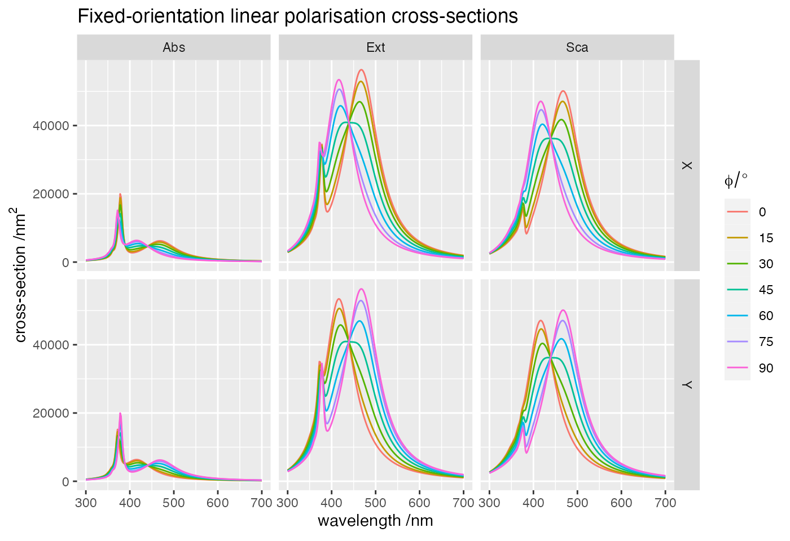

vignettes/02_angular_dispersion/02_angular_dispersion.Rmd
02_angular_dispersion.RmdThis example illustrates the calculation of far-field cross-sections for multiple angles of incidence. The structure consists of two silver spheres in water, and all parameters are kept to their default values.
This simulation uses the following input file
ModeAndScheme 2 3
MultipoleCutoff 5
Wavelength 300 700 200
Medium 1.7689 # epsilon of water
OutputFormat HDF5 results
Incidence -7 0.0 0.0 4 1 1 # 7 incidences along phi in [0, pi/2]
Scatterers 2
Ag -40.0 0.0 0.0 30.0
Ag 40.0 0.0 0.0 30.0The command to run the example is simply
../../build/terms input > logThe full log contains basic details of the calculations, and finishes with the timing.
readInputFile> Parsing file input
readInputFile> Detected keyword ModeAndScheme
mode=2 => spectrum_FF for far-field quantities
scheme=3 => Seek T^(j) using Mackowski's approach
readInputFile> Detected keyword MultipoleCutoff
Supplied ncut(1)= 5
Setting ncut(2)= ncut(1)
Setting ncut(3)= -8
readInputFile> Detected keyword Wavelength
Wavelength LB (nm): 300.000000
Wavelength UB (nm): 700.000000
nsteps, step: 200 2.0000
readInputFile> Detected keyword Medium
Constant host epsilon= 1.7689E+0
readInputFile> Detected keyword OutputFormat
OutputFormat=HDF5
All output files are stored in file "results.h5 "
readInputFile> Detected keyword Incidence
readInputFile> Euler angle alpha [0,2Pi) grid-points: 7
readInputFile> Modified alpha maximum: 1.57079633
readInputFile> Euler angle beta [0,Pi] value= 0.00000000
readInputFile> Euler angle gamma [0,2Pi) value= 0.00000000
Incident Euler angles and weights:
alpha beta gamma weight
0.11219974 0.00000000 0.00000000 0.14285714
0.33659921 0.00000000 0.00000000 0.14285714
0.56099869 0.00000000 0.00000000 0.14285714
0.78539816 0.00000000 0.00000000 0.14285714
1.00979764 0.00000000 0.00000000 0.14285714
1.23419711 0.00000000 0.00000000 0.14285714
1.45859659 0.00000000 0.00000000 0.14285714
readInputFile> Detected keyword Scatterers
with nscat= 2
readInputFile> Descriptor(s) and circumscribing sphere(s):
scatID String x y z R_0
1 Ag -4.0000E+1 0.0000E+0 0.0000E+0 3.0000E+1
2 Ag 4.0000E+1 0.0000E+0 0.0000E+0 3.0000E+1
readInputFile> Individual geometry characteristic(s):
scatID Details
1 Mie with ncoats= 0
2 Mie with ncoats= 0
readInputFile> Dielectric functions for (coated) Mie scatterer(s):
scatID volID Label
1 0 Ag
2 0 Ag
readInputFile> Finished parsing 7 keywords
spectrumFF> ===== Wavelength: 300.00 (nm) ======================
solve> Prestaging...
solve> Staging and solving/inverting...
solve> Done!
...
termsProgram> Program run time (CPU & real in s): 1.534E+00 1.348E+00The output consists of a single hdf5 file, storing the far-field cross-sections for each order from 1 to \(n_{1}\) for orientation-averaged quantities (as in example 01), and for each angle of incidence for fixed-orientation quantities, preceded by their average,
group name otype dclass
0 / Far-Field H5I_GROUP
1 /Far-Field Incidences H5I_DATASET FLOAT
2 /Far-Field Wavelengths H5I_DATASET FLOAT
3 /Far-Field fixed_incidence H5I_GROUP
4 /Far-Field/fixed_incidence csAbs1X H5I_DATASET FLOAT
5 /Far-Field/fixed_incidence csAbs2Y H5I_DATASET FLOAT
6 /Far-Field/fixed_incidence csAbs3R H5I_DATASET FLOAT
7 /Far-Field/fixed_incidence csAbs4L H5I_DATASET FLOAT
8 /Far-Field/fixed_incidence csExt1X H5I_DATASET FLOAT
9 /Far-Field/fixed_incidence csExt2Y H5I_DATASET FLOAT
10 /Far-Field/fixed_incidence csExt3R H5I_DATASET FLOAT
11 /Far-Field/fixed_incidence csExt4L H5I_DATASET FLOAT
12 /Far-Field/fixed_incidence csSca1X H5I_DATASET FLOAT
13 /Far-Field/fixed_incidence csSca2Y H5I_DATASET FLOAT
14 /Far-Field/fixed_incidence csSca3R H5I_DATASET FLOAT
15 /Far-Field/fixed_incidence csSca4L H5I_DATASET FLOAT
16 /Far-Field oa_incidence H5I_GROUP
17 /Far-Field/oa_incidence cdAbsOA H5I_DATASET FLOAT
18 /Far-Field/oa_incidence cdExtOA H5I_DATASET FLOAT
19 /Far-Field/oa_incidence cdScaOA H5I_DATASET FLOAT
20 /Far-Field/oa_incidence csAbsOA H5I_DATASET FLOAT
21 /Far-Field/oa_incidence csExtOA H5I_DATASET FLOAT
22 /Far-Field/oa_incidence csScaOA H5I_DATASET FLOAT
23 /Far-Field partial_absorption H5I_GROUP
24 /Far-Field/partial_absorption csAbs1X_scat001coat0 H5I_DATASET FLOAT
25 /Far-Field/partial_absorption csAbs1X_scat002coat0 H5I_DATASET FLOAT
26 /Far-Field/partial_absorption csAbs2Y_scat001coat0 H5I_DATASET FLOAT
27 /Far-Field/partial_absorption csAbs2Y_scat002coat0 H5I_DATASET FLOAT
28 /Far-Field/partial_absorption csAbs3R_scat001coat0 H5I_DATASET FLOAT
29 /Far-Field/partial_absorption csAbs3R_scat002coat0 H5I_DATASET FLOAT
30 /Far-Field/partial_absorption csAbs4L_scat001coat0 H5I_DATASET FLOAT
31 /Far-Field/partial_absorption csAbs4L_scat002coat0 H5I_DATASET FLOAT
dim
0
1 7 x 4
2 201
3
4 201 x 8
5 201 x 8
6 201 x 8
7 201 x 8
8 201 x 8
9 201 x 8
10 201 x 8
11 201 x 8
12 201 x 8
13 201 x 8
14 201 x 8
15 201 x 8
16
17 201 x 6
18 201 x 6
19 201 x 6
20 201 x 6
21 201 x 6
22 201 x 6
23
24 201 x 8
25 201 x 8
26 201 x 8
27 201 x 8
28 201 x 8
29 201 x 8
30 201 x 8
31 201 x 8List of 3
$ mCOA: tibble [3,618 × 5] (S3: tbl_df/tbl/data.frame)
..$ wavelength: num [1:3618] 300 300 300 300 300 300 302 302 302 302 ...
..$ crosstype : chr [1:3618] "Abs" "Abs" "Abs" "Abs" ...
..$ variable : chr [1:3618] "total" "I1" "I2" "I3" ...
..$ dichroism : num [1:3618] 5.40e-13 2.25e-13 1.40e-14 2.88e-13 1.26e-14 ...
..$ average : num [1:3618] 504.4 367.13 117.67 18.2 1.34 ...
$ mCFO: tibble [4,824 × 7] (S3: tbl_df/tbl/data.frame)
..$ wavelength : num [1:4824] 300 300 300 300 300 300 300 300 302 302 ...
..$ crosstype : chr [1:4824] "Abs" "Abs" "Abs" "Abs" ...
..$ variable : chr [1:4824] "total" "I1" "I2" "I3" ...
..$ polarisation1: num [1:4824] 517 517 517 517 517 ...
..$ polarisation2: num [1:4824] 517 517 517 517 517 ...
..$ dichroism : num [1:4824] -1.07e-11 -1.36e-11 -1.00e-11 -1.14e-11 -1.14e-11 ...
..$ average : num [1:4824] 517 517 517 517 517 ...
$ mLFO: tibble [4,824 × 7] (S3: tbl_df/tbl/data.frame)
..$ wavelength : num [1:4824] 300 300 300 300 300 300 300 300 302 302 ...
..$ crosstype : chr [1:4824] "Abs" "Abs" "Abs" "Abs" ...
..$ variable : chr [1:4824] "total" "I1" "I2" "I3" ...
..$ polarisation1: num [1:4824] 517 441 456 483 517 ...
..$ polarisation2: num [1:4824] 517 593 578 551 517 ...
..$ dichroism : num [1:4824] -2.50e-12 -1.52e+02 -1.22e+02 -6.77e+01 -3.18e-12 ...
..$ average : num [1:4824] 517 517 517 517 517 ...The following files contain fixed-orientation cross-sections for X and Y linear polarisations,
Rows: 4,824
Columns: 7
$ wavelength <dbl> 300, 300, 300, 300, 300, 300, 300, 300, 302, 302, 302, 3…
$ crosstype <chr> "Abs", "Abs", "Abs", "Abs", "Abs", "Abs", "Abs", "Abs", …
$ variable <chr> "total", "I1", "I2", "I3", "I4", "I5", "I6", "I7", "tota…
$ polarisation1 <dbl> 516.7623, 440.6962, 455.7620, 482.9097, 516.7623, 550.61…
$ polarisation2 <dbl> 516.7623, 592.8283, 577.7625, 550.6148, 516.7623, 482.90…
$ dichroism <dbl> -2.501110e-12, -1.521321e+02, -1.220005e+02, -6.770514e+…
$ average <dbl> 516.7623, 516.7623, 516.7623, 516.7623, 516.7623, 516.76…tibble [8,442 × 7] (S3: tbl_df/tbl/data.frame)
$ wavelength: num [1:8442] 300 300 300 300 300 300 300 300 300 300 ...
$ crosstype : chr [1:8442] "Abs" "Abs" "Abs" "Abs" ...
$ variable : chr [1:8442] "I1" "I1" "I2" "I2" ...
$ dichroism : num [1:8442] -152.1 -152.1 -122 -122 -67.7 ...
$ average : num [1:8442] 517 517 517 517 517 ...
$ name : chr [1:8442] "polarisation1" "polarisation2" "polarisation1" "polarisation2" ...
$ value : num [1:8442] 441 593 456 578 483 ...
Because we are rotating \(\phi\) from 0 to 90 degrees, the two polarisations show the opposite trend as the incident electric field rotates from x to y.
Last run: 07 February, 2022